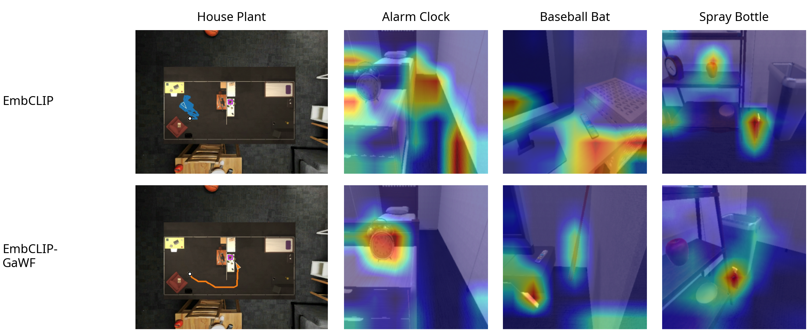

FEEDBACK-GATED MEMORY SUPPORTS VISUAL NAVIGATION
GitHubWe compare EmbCLIP with EmbCLIP-GaWF on unseen RoboTHOR environments. Both agents receive RGB images and a target object category.

Results
| Model | SR | SPL |
|---|---|---|
| EmbCLIP | — | — |
| EmbCLIP-GaWF | — | — |
II. Grad-CAM Reveals Visual Cues Behind the Stopping Decision
We analyze the trained agents with Grad-CAM to inspect visual information associated with stopping. The selected successful terminal views show each model’s sensitivity when the target is visible.
Grad-CAM at successful stops, using each model’s own view and history. Colors are normalized per map; warm regions indicate positive contribution to stopping. Baseball Bat uses different episodes.